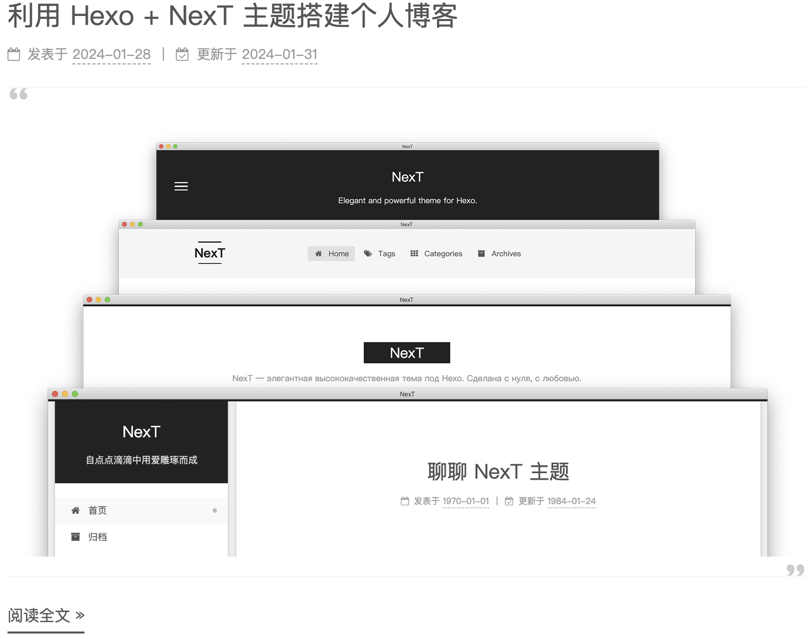

Hexo 的部署
前置条件
安装 git
- Linux (Ubuntu):
1
$ sudo apt-get install git-core
安装 Node.js
- Linux (Ubuntu):
1
2$ curl -fsSL https://deb.nodesource.com/setup_20.x | sudo -E bash - && \
sudo apt-get install -y nodejs
安装 Hexo
Linux (Ubuntu):
在主目录下执行（可能需要网络加速）：
1
$ npm install -g hexo-cli
将 Hexo 所在目录（主目录）下的
node_modules添加到环境变量之中即可直接使用hexo <command>：1
$ echo 'PATH="$PATH:～/node_modules/.bin"' >> ~/.profile
建立个人博客网站
执行以下命令：
1 | $ hexo init <blog-folder> |
将在 <blog-folder> 目录下自动创建所需的文件。
将 Hexo 部署到 Github
Pages
进入博客主目录并安装
hexo-deployer-git：1
2$ cd <blog-folder>
$ npm install hexo-deployer-git --save在
_config.yml中添加以下配置:1
2
3
4
5deploy:
type: git
repo: https://github.com/<username>/<project>
# example, https://github.com/hexojs/hexojs.github.io
branch: gh-pages执行
hexo clean && hexo deploy浏览 <GitHub Username>.github.io 检查你的网站能否运作。
Hexo 的使用
常用命令
hexo new [layout] <title>：生成标题为 title 的相应种类（post/draft/page）页面，推荐生成 draft 草稿后再进行 publishhexo generate：生成所有的静态文件（可以通过添加--draft参数指定为 draft 类型的页面生成静态文件）hexo server：启动服务器（可以通过添加--draft参数指定服务器启动后可以看到 draft 类型的页面）hexo clean：清除所有生成的静态文件和缓存hexo publish [layout] <filename>：将草稿从source/_drafts目录转移到source/_posts目录
博客资源管理
为了方便对每篇博客中引用的相关资源进行管理，需要利用资源管理文件夹（asset folder）对相关资源进行整合。具体操作如下：
- 在
_config.yml中，将post_asset_folder设置为true：1
2
3...
post_asset_folder: true # <== change `false` to `true`
... - 通过
hexo new命令生成新的页面：此时就可以在1
$ hexo new draft test
source/_drafts目录下自动生成同名的test.md文件以及test资源文件夹：（⚠️ Note：在1
2
3
4source
└── _drafts
├── test
└── test.mdtest.md同级目录下新建同名文件夹test也可作为资源管理文件夹）
数学公式的渲染
要想在网页上也能渲染数学公式，需要经过以下一系列的配置（这里使用更为强大的
mathjax 引擎）：
在
themes/next/_config.yml中启用mathjax引擎：1
2
3
4math:
...
mathjax:
enable: true # <== set with true卸载原来的渲染器，安装新的
hexo-renderer-pandoc渲染器：1
2$ npm un hexo-renderer-marked
$ npm i hexo-renderer-pandoc安装
pandoc，不然会报错渲染失败：1
2$ wget https://github.com/jgm/pandoc/releases/download/3.1.11.1/pandoc-3.1.11.1-1-amd64.deb
$ sudo dkpg -i pandoc-3.1.11.1-1-amd64.deb最新的安装包可以从官方 github 仓库拿到，也可以遵循官方的指引进行安装。
在博客的 front-matter 部分标识为这篇文章进行数学渲染：
1
2
3
4---
title: Will Render Math
mathjax: true
---尽情享受数学公式的编辑！ \[ \mathsf{MLP}_{S_M}(y) = \sigma(yW^1_{S_M})(W^2_{S_M})^T \]
NexT 主题的配置
NexT 插件的安装
1 | $ cd <blog-folder> |
hexo-less 插件安装
hexo-less
插件可以帮助在首页显示文章的摘要而避免在博客正文中出现，对于实现简洁优美的博客至关重要。以下介绍如何使用：
在博客主目录下安装
hexo-less插件：1
$ npm install hexo-less --save
在博客正文
test.md中使用<!-- less -->注释标注摘要部分：此摘要将出现在博客首页而非文章中。1
2
3
4
5
6
7---
title: test
author: BHbean
---
我是短小精悍的文章摘要(๑•̀ㅂ•́) ✧
<!-- less -->（⚠️ Note：要想摘要也出现在文章开头只需要把
less改为more即可。）
美化博客首页
由于非常喜欢 J.F's BLOG 的博客首页，简约优美，因此以下将参考其博客进行首页的美化。
更换主题：
在
themes/next/_config.yml中设置主题为Mist：1
2
3
4
5# Schemes
# scheme: Muse
scheme: Mist # <== uncomment this line
#scheme: Pisces
#scheme: Gemini将博客封面展示在首页：
在
.md文件中使用相对路径引用图片在本地渲染是可行的，但在生成待发布的 html 页面时，图片的相对路径会发生变化从而使得首页无法正确地引用到图片（在博客页可以成功引用）。官方的解决方案是使用标签插件（Tag Plugins），即1
{% asset_img example.jpg This is an example image %}
其中，
example.jpg是图片在资源管理文件夹（asset folder）中的路径。这样就可以在首页和博客页上正确引用所需的图片。（⚠️ Note：官方提供的另一种方法与安装
hexo-asset-image的方法实测无效）NexT 主题中内置的
cq标签（center quote）做到为引用内容加上双引号，结合已经安装的hexo-less插件，在.md文件顶部输入如下内容即可复刻J.F's BLOG的博客首页：1
2
3
4
5
6
7---
title: test
author: BHbean
---
{% cq %}{% asset_img images/cover.png cover %}{% endcq %}
<!-- less -->最终效果如下所示： 